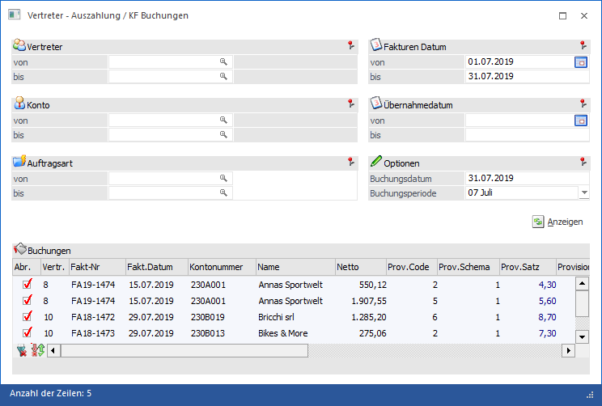
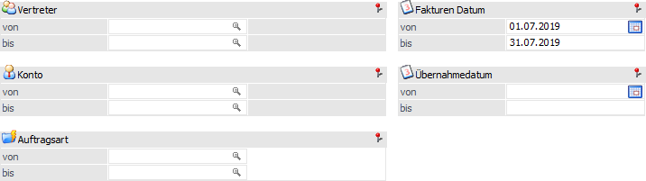
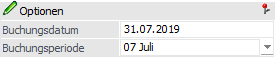
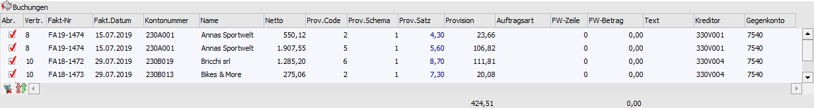
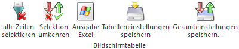
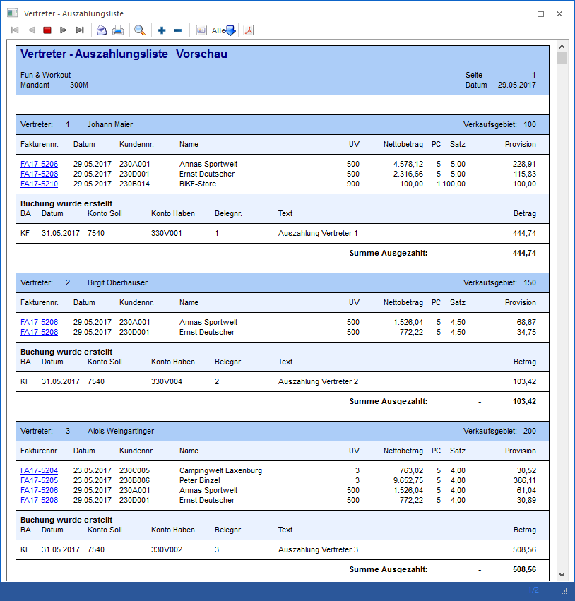

Im Menüpunkt "Vertreter - Auszahlung / KF Buchungen" können alle durch die Provisionsübernahme bereits vorhandenen, aber noch nicht ausbezahlten Vertreterjournalzeilen "ausbezahlt" werden.
Dieser Menüpunkt zur Auszahlung der Beträge ist aufzurufen unter…
1 WinLine FAKT
1 Auswertungen
1 Vertreterauswertungen
1 Übernahmejournal
1 Auszahlung/KF Buchungen erstellen

Folgende Selektionskriterien und Bearbeitungsbereiche stehen zur Verfügung:
Selektion

Ø Vertreter von / bis
An dieser Stelle kann eine Selektion nach den Vertretern erfolgen, welche ausgezahlt werden sollen.
Ø Konto von / bis
In diesen Feldern kann eine Eingrenzung auf die Kunden vorgenommen werden, deren Fakturen ausgezahlt werden sollen.
Ø Auftragsart von / bis
Bei der Erfassung eines Beleges kann im Belegkopf eine Auftragsart hinterlegt werden, nach welcher an dieser Stelle selektiert werden kann.
Ø Fakturen Datum von / bis
Mit dieser Einschränkung kann entschieden werden, von welchem Zeitraum die Fakturen sein sollen.
Ø Übernahmedatum von / bis
Mit dieser Selektion kann auf das Übernahmedatum aus der Provisionsübernahme eingegrenzt werden.
Optionen

Ø Buchungsdatum
In diesem Feld kann das Datum angegeben werden zu dem die Zahlung gebucht werden soll.
Ø Buchungsperiode
Mit Hilfe einer Auswahlliste kann die Buchungsperiode für die Zahlung angegeben werden.
Anzeigen

Ø Anzeigen
Durch Anwahl des Buttons "Anzeigen" werden alle Vertreterjournalzeilen aus dem Vertreterübernahmejournal gemäß Selektion in der Tabelle "Buchungen" ausgewiesen.
Tabelle "Buchungen"

Durch Anwahl des Buttons "Anzeigen" werden alle Vertreterjournalzeilen aus dem Vertreterübernahmejournal gemäß Selektion in der Tabelle "Buchungen" ausgewiesen.
Innerhalb der Tabelle werden u.a. die Vertreter, die Fakturen, die Kundenkonten, die Bemessung, der Provisionscode (PC), das Provisionsschema (PS), etc. dargestellt.
Ø Abr.
Mit Hilfe der Checkbox "Abr." wird definiert, welche Journalzeilen gebucht / gezahlt werden sollen.
Ø Kreditor
In dieser Spalte wird das Kreditorenkonto des Vertreters gemäß Vertreterstamm angezeigt und kann editiert werden (es muss sich um ein Kreditorenkonto handeln).
Ø Gegenkonto
An dieser Stelle wird das Gegenkonto für den Buchungssatz angezeigt (stammt aus dem Vertreterstamm des jeweiligen Vertreters) und kann editiert werden (es muss sich um ein Erfolgskonto handeln).
Tabellenbuttons

Ø alle Zeilen selektieren
Mit dieser Funktion können alle Zeilen in der Tabelle aktiviert werden.
Ø Selektion umkehren
Durch Anklicken des Buttons "Selektion umkehren" wird die Selektion in der Tabelle ins Gegenteil verkehrt.
Ø Ausgabe Excel
Durch Anwahl des Buttons "Ausgabe Excel" wird der Inhalt der Tabelle an Microsoft Excel übergeben.
Ø Tabelleneinstellungen speichern
Die Spalten einer Tabelle können grundsätzlich an beliebige Positionen verschoben, bzw. in der Breite entsprechend angepasst werden. Durch Anwahl des Buttons "Tabelleneinstellungen speichern" werden die Einstellungen benutzerspezifisch gespeichert und bei dem nächsten Aufruf des Programmpunktes wieder vorgeschlagen.
Ø Gesamteinstellungen speichern…
Im Gegensatz zu "Tabelleneinstellungen speichern" können mit "Gesamteinstellungen speichern" mehrere Tabellenaufbauten gespeichert und nach Wunsch geladen werden. Zusätzlich werden Sonderfunktionen der Tabelle (z.B. "Spalte gruppieren") ebenfalls bei der Speicherung bedacht.
Buttons
Ø Ok
Durch Drücken des Buttons "Ok" bzw. der Taste F5 wird die Auszahlung durchgeführt. Hierdurch werden die Journalzeilen, für welche die Auszahlung durchgeführt wird, als "ausgezahlt" markiert und ein Vertreter-Auszahlungsprotokoll ausgegeben.
Hinweis
Ist im Vertreterstamm bei jeweiligen Vertreter (-gruppe) bzw. in weiterer Folge in der "Auszahlungstabelle" ein Kreditorenkonto sowie ein Gegenkonto hinterlegt, und ist der Buchungsbetrag ungleich 0, so wird auch eine Buchungszeile pro Vertreter, im Stapel -100, erstellt. Die KF-Buchungen für die Vertreterauszahlung werden mit dem Kennzeichen "Netto-Buchung" an die WinLine® FIBU übergeben. Dabei wird pro Vertreter für alle seine Journalzeilen nur eine Buchung erstellt (bzw. wird pro Währung eine eigene Buchung erstellt).
Ø Ende
Mit Hilfe des Buttons "Ende" bzw. der Taste ESC wird das Fenster geschlossen und keine Auszahlung durchgeführt.
Ø Vorschau
Mit dem Button "Vorschau" kann ein Protokoll ausgegeben werden, aus dem ersichtlich ist, welche Vertreterjournalzeilen als "ausgezahlt" markiert werden würden und welche Buchung dafür erstellt werden würde.
